Consistency Preserved 3D Volume Reconstruction from Sparse 2D Slices via a Diffusion Framework for Volumetric Optical Imaging
† These authors contributed equally to this work.
Results
Allen Cell Dataset
DNA
| Sample 1 Ours | Sample 1 GT | Sample 2 Ours | Sample 2 GT |
|---|---|---|---|
| 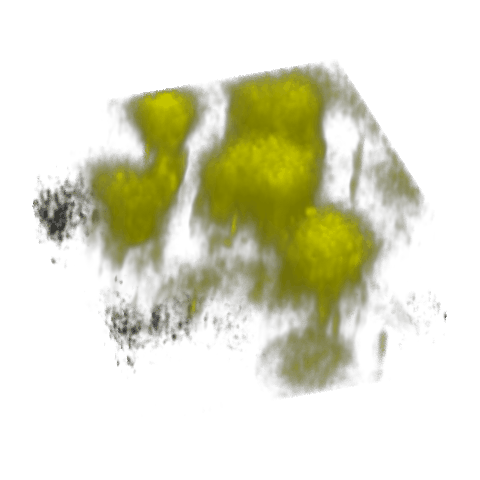 | 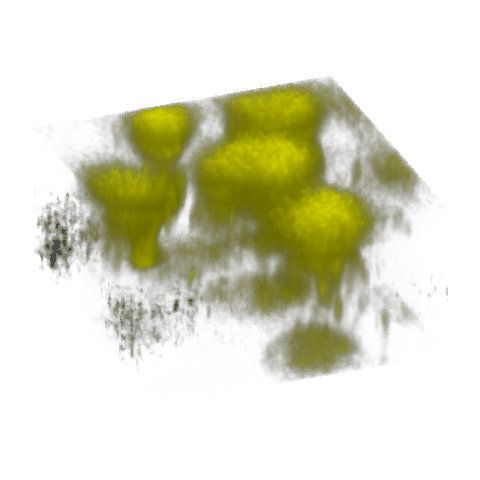 | 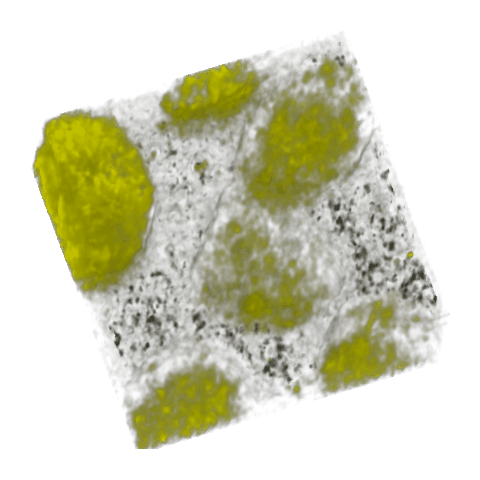 | 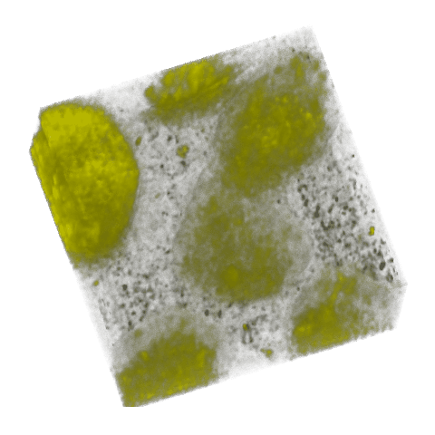 |
Membrane
| Sample 1 Ours | Sample 1 GT | Sample 2 Ours | Sample 2 GT |
|---|---|---|---|
| 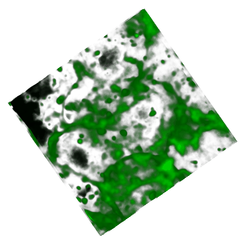 | 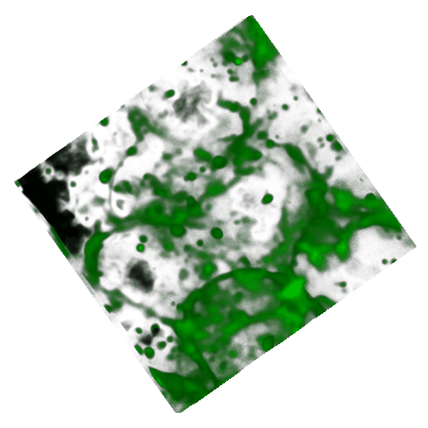 | 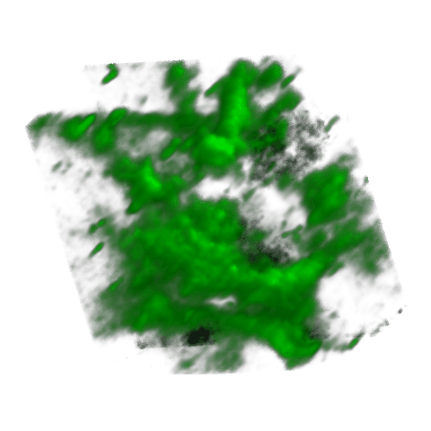 |  |
Structure
| Sample 1 Ours | Sample 1 GT | Sample 2 Ours | Sample 2 GT |
|---|---|---|---|
| 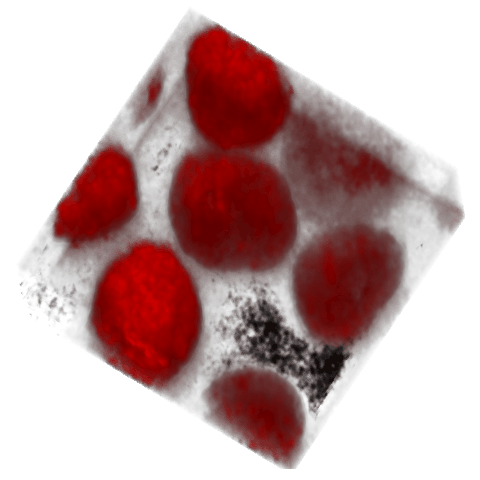 | 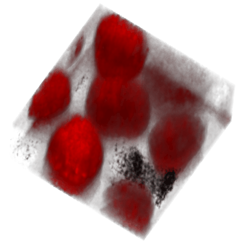 | 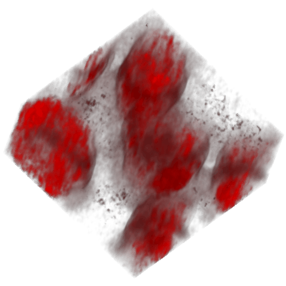 | 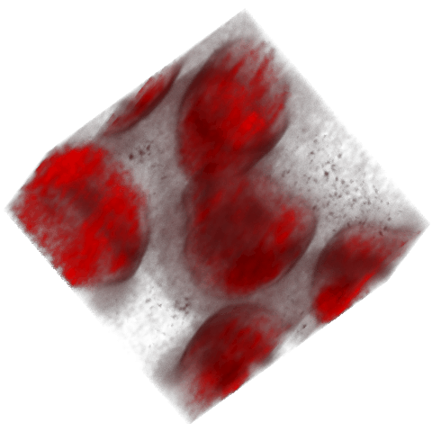 |